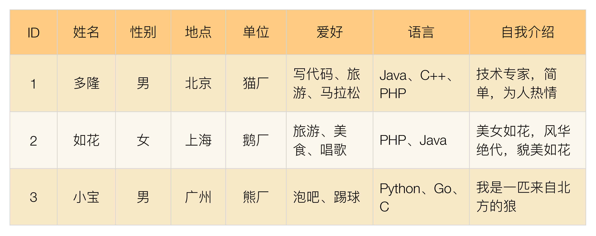

- 00 开篇词 照着做，你也能成为架构师！.md
- 01 架构到底是指什么？.md
- 02 架构设计的历史背景.md
- 03 架构设计的目的.md
- 04 复杂度来源：高性能.md
- 05 复杂度来源：高可用.md
- 06 复杂度来源：可扩展性.md
- 07 复杂度来源：低成本、安全、规模.md
- 08 架构设计三原则.md
- 09 架构设计原则案例.md
- 10 架构设计流程：识别复杂度.md
- 11 架构设计流程：设计备选方案.md
- 12 架构设计流程：评估和选择备选方案.md
- 13 架构设计流程：详细方案设计.md
- 14 高性能数据库集群：读写分离.md
- 15 高性能数据库集群：分库分表.md
- 16 高性能NoSQL.md
- 17 高性能缓存架构.md
- 18 单服务器高性能模式：PPC与TPC.md
- 19 单服务器高性能模式：Reactor与Proactor.md
- 20 高性能负载均衡：分类及架构.md
- 21 高性能负载均衡：算法.md
- 22 想成为架构师，你必须知道CAP理论.md
- 23 想成为架构师，你必须掌握的CAP细节.md
- 24 FMEA方法，排除架构可用性隐患的利器.md
- 25 高可用存储架构：双机架构.md
- 26 高可用存储架构：集群和分区.md
- 27 如何设计计算高可用架构？.md
- 28 业务高可用的保障：异地多活架构.md
- 29 异地多活设计4大技巧.md
- 30 异地多活设计4步走.md
- 31 如何应对接口级的故障？.md
- 32 可扩展架构的基本思想和模式.md
- 33 传统的可扩展架构模式：分层架构和SOA.md
- 34 深入理解微服务架构：银弹 or 焦油坑？.md
- 35 微服务架构最佳实践 - 方法篇.md
- 36 微服务架构最佳实践 - 基础设施篇.md
- 37 微内核架构详解.md
- 38 架构师应该如何判断技术演进的方向？.md
- 39 互联网技术演进的模式.md
- 40 互联网架构模板：存储层技术.md
- 41 互联网架构模板：开发层和服务层技术.md
- 42 互联网架构模板：网络层技术.md
- 43 互联网架构模板：用户层和业务层技术.md
- 44 互联网架构模板：平台技术.md
- 45 架构重构内功心法第一式：有的放矢.md
- 46 架构重构内功心法第二式：合纵连横.md
- 47 架构重构内功心法第三式：运筹帷幄.md
- 48 再谈开源项目：如何选择、使用以及二次开发？.md
- 49 谈谈App架构的演进.md
- 50 架构实战：架构设计文档模板.md
- 51 如何画出优秀的软件系统架构图？.md
- 加餐｜业务架构实战营开营了.md
- 加餐｜单服务器高性能模式性能对比.md
- 加餐｜扒一扒中台皇帝的外衣.md
- 如何高效地学习开源项目 华仔，放学别走！ 第3期.md
- 新书首发 《从零开始学架构》.md
- 架构专栏特别放送 华仔，放学别走！ 第2期.md
- 架构专栏特别放送 华仔，放学别走！第1期.md
- 架构师必读书单 华仔，放学别走！ 第5期.md
- 架构师成长之路 华仔，放学别走！ 第4期.md
- 结束语 坚持，成就你的技术梦想.md
16 高性能NoSQL
关系数据库经过几十年的发展后已经非常成熟，强大的SQL功能和ACID的属性，使得关系数据库广泛应用于各式各样的系统中，但这并不意味着关系数据库是完美的，关系数据库存在如下缺点。
- 关系数据库存储的是行记录，无法存储数据结构
以微博的关注关系为例，“我关注的人”是一个用户ID列表，使用关系数据库存储只能将列表拆成多行，然后再查询出来组装，无法直接存储一个列表。
- 关系数据库的schema扩展很不方便
关系数据库的表结构schema是强约束，操作不存在的列会报错，业务变化时扩充列也比较麻烦，需要执行DDL（data definition language，如CREATE、ALTER、DROP等）语句修改，而且修改时可能会长时间锁表（例如，MySQL可能将表锁住1个小时）。
- 关系数据库在大数据场景下I/O较高
如果对一些大量数据的表进行统计之类的运算，关系数据库的I/O会很高，因为即使只针对其中某一列进行运算，关系数据库也会将整行数据从存储设备读入内存。
- 关系数据库的全文搜索功能比较弱
关系数据库的全文搜索只能使用like进行整表扫描匹配，性能非常低，在互联网这种搜索复杂的场景下无法满足业务要求。
针对上述问题，分别诞生了不同的NoSQL解决方案，这些方案与关系数据库相比，在某些应用场景下表现更好。但世上没有免费的午餐，NoSQL方案带来的优势，本质上是牺牲ACID中的某个或者某几个特性，因此我们不能盲目地迷信NoSQL是银弹，而应该将NoSQL作为SQL的一个有力补充，NoSQL != No SQL，而是NoSQL = Not Only SQL。
常见的NoSQL方案分为4类。
- K-V存储：解决关系数据库无法存储数据结构的问题，以Redis为代表。
- 文档数据库：解决关系数据库强schema约束的问题，以MongoDB为代表。
- 列式数据库：解决关系数据库大数据场景下的I/O问题，以HBase为代表。
- 全文搜索引擎：解决关系数据库的全文搜索性能问题，以Elasticsearch为代表。
今天，我来介绍一下各种高性能NoSQL方案的典型特征和应用场景。
K-V存储
K-V存储的全称是Key-Value存储，其中Key是数据的标识，和关系数据库中的主键含义一样，Value就是具体的数据。
Redis是K-V存储的典型代表，它是一款开源（基于BSD许可）的高性能K-V缓存和存储系统。Redis的Value是具体的数据结构，包括string、hash、list、set、sorted set、bitmap和hyperloglog，所以常常被称为数据结构服务器。
以List数据结构为例，Redis提供了下面这些典型的操作（更多请参考链接：http://redis.cn/commands.html#list）：
- LPOP key从队列的左边出队一个元素。
- LINDEX key index获取一个元素，通过其索引列表。
- LLEN key获得队列（List）的长度。
- RPOP key从队列的右边出队一个元素。
以上这些功能，如果用关系数据库来实现，就会变得很复杂。例如，LPOP操作是移除并返回 key对应的list的第一个元素。如果用关系数据库来存储，为了达到同样目的，需要进行下面的操作：
- 每条数据除了数据编号（例如，行ID），还要有位置编号，否则没有办法判断哪条数据是第一条。注意这里不能用行ID作为位置编号，因为我们会往列表头部插入数据。
- 查询出第一条数据。
- 删除第一条数据。
- 更新从第二条开始的所有数据的位置编号。
可以看出关系数据库的实现很麻烦，而且需要进行多次SQL操作，性能很低。
Redis的缺点主要体现在并不支持完整的ACID事务，Redis虽然提供事务功能，但Redis的事务和关系数据库的事务不可同日而语，Redis的事务只能保证隔离性和一致性（I和C），无法保证原子性和持久性（A和D）。
虽然Redis并没有严格遵循ACID原则，但实际上大部分业务也不需要严格遵循ACID原则。以上面的微博关注操作为例，即使系统没有将A加入B的粉丝列表，其实业务影响也非常小，因此我们在设计方案时，需要根据业务特性和要求来确定是否可以用Redis，而不能因为Redis不遵循ACID原则就直接放弃。
文档数据库
为了解决关系数据库schema带来的问题，文档数据库应运而生。文档数据库最大的特点就是no-schema，可以存储和读取任意的数据。目前绝大部分文档数据库存储的数据格式是JSON（或者BSON），因为JSON数据是自描述的，无须在使用前定义字段，读取一个JSON中不存在的字段也不会导致SQL那样的语法错误。
文档数据库的no-schema特性，给业务开发带来了几个明显的优势。
1.新增字段简单
业务上增加新的字段，无须再像关系数据库一样要先执行DDL语句修改表结构，程序代码直接读写即可。
2.历史数据不会出错
对于历史数据，即使没有新增的字段，也不会导致错误，只会返回空值，此时代码进行兼容处理即可。
3.可以很容易存储复杂数据
JSON是一种强大的描述语言，能够描述复杂的数据结构。例如，我们设计一个用户管理系统，用户的信息有ID、姓名、性别、爱好、邮箱、地址、学历信息。其中爱好是列表（因为可以有多个爱好）；地址是一个结构，包括省市区楼盘地址；学历包括学校、专业、入学毕业年份信息等。如果我们用关系数据库来存储，需要设计多张表，包括基本信息（列：ID、姓名、性别、邮箱）、爱好（列：ID、爱好）、地址（列：省、市、区、详细地址）、学历（列：入学时间、毕业时间、学校名称、专业），而使用文档数据库，一个JSON就可以全部描述。
{
"id": 10000,
"name": "James",
"sex": "male",
"hobbies": [
"football",
"playing",
"singing"
],
"email": "[email protected]",
"address": {
"province": "GuangDong",
"city": "GuangZhou",
"district": "Tianhe",
"detail": "PingYun Road 163"
},
"education": [
{
"begin": "2000-09-01",
"end": "2004-07-01",
"school": "UESTC",
"major": "Computer Science & Technology"
},
{
"begin": "2004-09-01",
"end": "2007-07-01",
"school": "SCUT",
"major": "Computer Science & Technology"
}
]
}
通过这个样例我们看到，使用JSON来描述数据，比使用关系型数据库表来描述数据方便和容易得多，而且更加容易理解。
文档数据库的这个特点，特别适合电商和游戏这类的业务场景。以电商为例，不同商品的属性差异很大。例如，冰箱的属性和笔记本电脑的属性差异非常大，如下图所示。


即使是同类商品也有不同的属性。例如，LCD和LED显示器，两者有不同的参数指标。这种业务场景如果使用关系数据库来存储数据，就会很麻烦，而使用文档数据库，会简单、方便许多，扩展新的属性也更加容易。
文档数据库no-schema的特性带来的这些优势也是有代价的，最主要的代价就是不支持事务。例如，使用MongoDB来存储商品库存，系统创建订单的时候首先需要减扣库存，然后再创建订单。这是一个事务操作，用关系数据库来实现就很简单，但如果用MongoDB来实现，就无法做到事务性。异常情况下可能出现库存被扣减了，但订单没有创建的情况。因此某些对事务要求严格的业务场景是不能使用文档数据库的。
文档数据库另外一个缺点就是无法实现关系数据库的join操作。例如，我们有一个用户信息表和一个订单表，订单表中有买家用户id。如果要查询“购买了苹果笔记本用户中的女性用户”，用关系数据库来实现，一个简单的join操作就搞定了；而用文档数据库是无法进行join查询的，需要查两次：一次查询订单表中购买了苹果笔记本的用户，然后再查询这些用户哪些是女性用户。
列式数据库
顾名思义，列式数据库就是按照列来存储数据的数据库，与之对应的传统关系数据库被称为“行式数据库”，因为关系数据库是按照行来存储数据的。
关系数据库按照行式来存储数据，主要有以下几个优势：
- 业务同时读取多个列时效率高，因为这些列都是按行存储在一起的，一次磁盘操作就能够把一行数据中的各个列都读取到内存中。
- 能够一次性完成对一行中的多个列的写操作，保证了针对行数据写操作的原子性和一致性；否则如果采用列存储，可能会出现某次写操作，有的列成功了，有的列失败了，导致数据不一致。
我们可以看到，行式存储的优势是在特定的业务场景下才能体现，如果不存在这样的业务场景，那么行式存储的优势也将不复存在，甚至成为劣势，典型的场景就是海量数据进行统计。例如，计算某个城市体重超重的人员数据，实际上只需要读取每个人的体重这一列并进行统计即可，而行式存储即使最终只使用一列，也会将所有行数据都读取出来。如果单行用户信息有1KB，其中体重只有4个字节，行式存储还是会将整行1KB数据全部读取到内存中，这是明显的浪费。而如果采用列式存储，每个用户只需要读取4字节的体重数据即可，I/O将大大减少。
除了节省I/O，列式存储还具备更高的存储压缩比，能够节省更多的存储空间。普通的行式数据库一般压缩率在3:1到5:1左右，而列式数据库的压缩率一般在8:1到30:1左右，因为单个列的数据相似度相比行来说更高，能够达到更高的压缩率。
同样，如果场景发生变化，列式存储的优势又会变成劣势。典型的场景是需要频繁地更新多个列。因为列式存储将不同列存储在磁盘上不连续的空间，导致更新多个列时磁盘是随机写操作；而行式存储时同一行多个列都存储在连续的空间，一次磁盘写操作就可以完成，列式存储的随机写效率要远远低于行式存储的写效率。此外，列式存储高压缩率在更新场景下也会成为劣势，因为更新时需要将存储数据解压后更新，然后再压缩，最后写入磁盘。
基于上述列式存储的优缺点，一般将列式存储应用在离线的大数据分析和统计场景中，因为这种场景主要是针对部分列单列进行操作，且数据写入后就无须再更新删除。
全文搜索引擎
传统的关系型数据库通过索引来达到快速查询的目的，但是在全文搜索的业务场景下，索引也无能为力，主要体现在：
- 全文搜索的条件可以随意排列组合，如果通过索引来满足，则索引的数量会非常多。
- 全文搜索的模糊匹配方式，索引无法满足，只能用like查询，而like查询是整表扫描，效率非常低。
我举一个具体的例子来看看关系型数据库为何无法满足全文搜索的要求。假设我们做一个婚恋网站，其主要目的是帮助程序员找朋友，但模式与传统婚恋网站不同，是“程序员发布自己的信息，用户来搜索程序员”。程序员的信息表设计如下：

我们来看一下这个简单业务的搜索场景：
- 美女1：听说PHP是世界上最好的语言，那么PHP的程序员肯定是钱最多的，而且我妈一定要我找一个上海的。
美女1的搜索条件是“性别 + PHP + 上海”，其中“PHP”要用模糊匹配查询“语言”列，“上海”要查询“地点”列，如果用索引支撑，则需要建立“地点”这个索引。
- 美女2：我好崇拜这些技术哥哥啊，要是能找一个鹅厂技术哥哥陪我旅游就更好了。
美女2的搜索条件是“性别 + 鹅厂 + 旅游”，其中“旅游”要用模糊匹配查询“爱好”列，“鹅厂”需要查询“单位”列，如果要用索引支撑，则需要建立“单位”索引。
- 美女3：我是一个“女程序员”，想在北京找一个猫厂的Java技术专家。
美女3的搜索条件是“性别 + 猫厂 + 北京 + Java + 技术专家”，其中“猫厂 + 北京”可以通过索引来查询，但“Java”“技术专家”都只能通过模糊匹配来查询。
- 帅哥4：程序员妹子有没有漂亮的呢？试试看看。
帅哥4的搜索条件是“性别 + 美丽 + 美女”，只能通过模糊匹配搜索“自我介绍”列。
以上只是简单举个例子，实际上搜索条件是无法列举完全的，各种排列组合非常多，通过这个简单的样例我们就可以看出关系数据库在支撑全文搜索时的不足。
1.全文搜索基本原理
全文搜索引擎的技术原理被称为“倒排索引”（Inverted index），也常被称为反向索引、置入档案或反向档案，是一种索引方法，其基本原理是建立单词到文档的索引。之所以被称为“倒排”索引，是和“正排“索引相对的，“正排索引”的基本原理是建立文档到单词的索引。我们通过一个简单的样例来说明这两种索引的差异。
假设我们有一个技术文章的网站，里面收集了各种技术文章，用户可以在网站浏览或者搜索文章。
正排索引示例：
![注：文章内容仅为示范，文章内 [br] 实际上存储的是几千字的内容](assets/5fe73007957ecfcca009fd81f673df87.jpg)
正排索引适用于根据文档名称来查询文档内容。例如，用户在网站上单击了“面向对象葵花宝典是什么”，网站根据文章标题查询文章的内容展示给用户。
倒排索引示例：
![注：表格仅为示范，不是完整的倒排索引表格，[br] 实际上的倒排索引有成千上万行，因为每个单词就是一个索引](assets/ea5dc300ec9c556dc13790b69f4d60f6.jpg)
倒排索引适用于根据关键词来查询文档内容。例如，用户只是想看“设计”相关的文章，网站需要将文章内容中包含“设计”一词的文章都搜索出来展示给用户。
2.全文搜索的使用方式
全文搜索引擎的索引对象是单词和文档，而关系数据库的索引对象是键和行，两者的术语差异很大，不能简单地等同起来。因此，为了让全文搜索引擎支持关系型数据的全文搜索，需要做一些转换操作，即将关系型数据转换为文档数据。
目前常用的转换方式是将关系型数据按照对象的形式转换为JSON文档，然后将JSON文档输入全文搜索引擎进行索引。我同样以程序员的基本信息表为例，看看如何转换。
将前面样例中的程序员表格转换为JSON文档，可以得到3个程序员信息相关的文档，我以程序员1为例：
{
"id": 1,
"姓名": "多隆",
"性别": "男",
"地点": "北京",
"单位": "猫厂",
"爱好": "写代码，旅游，马拉松",
"语言": "Java、C++、PHP",
"自我介绍": "技术专家，简单，为人热情"
}
全文搜索引擎能够基于JSON文档建立全文索引，然后快速进行全文搜索。以Elasticsearch为例，其索引基本原理如下：
Elastcisearch是分布式的文档存储方式。它能存储和检索复杂的数据结构——序列化成为JSON文档——以实时的方式。
在Elasticsearch中，每个字段的所有数据都是默认被索引的。即每个字段都有为了快速检索设置的专用倒排索引。而且，不像其他多数的数据库，它能在相同的查询中使用所有倒排索引，并以惊人的速度返回结果。
（https://www.elastic.co/guide/cn/elasticsearch/guide/current/data-in-data-out.html）
小结
今天我为你讲了为了弥补关系型数据库缺陷而产生的NoSQL技术，希望对你有所帮助。
这就是今天的全部内容，留一道思考题给你吧，因为NoSQL的方案功能都很强大，有人认为NoSQL = No SQL，架构设计的时候无需再使用关系数据库，对此你怎么看？
© 2019 - 2023 Liangliang Lee. Powered by Vert.x and hexo-theme-book.